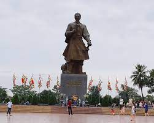

Vũ Minh Quốc sinh ngày 26 tháng 5 năm 2004 .Được sinh và lớn lên tại xã Hồng Quang Huyện Nam Trực tỉnh Nam Định.Lớn lên trong gia đình 3 chị em ruột gồm 2 chị gái và bản thân là em út
Vũ Minh Quốc
Ngày Sinh:26-05-2004
Nam Định là một tỉnh nằm ở phía Nam đồng bằng Bắc Bộ (còn gọi là đồng bằng Sông Hồng), Việt Nam, giáp tỉnh Thái Bình về phía đông bắc, tỉnh Ninh Bình về phía tây nam, tỉnh Hà Nam về phía tây bắc và giáp vịnh Bắc Bộ về phía đông nam. Nam Định có diện tích lớn thứ 52 trong 63 tỉnh thành
Thành Phố Nam Định
@Minh Quốc